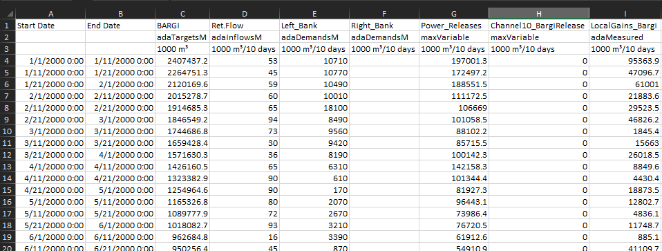

Time Series Import Tool
MODSIM -> Import MODSIM Timeseries
This tool allows importing multiple time series to MODSIM from a comma separated file (CSV file). The file headers format allow flexibility in importing different time series types in different units to different MODSIM objects.
File Format
The csv file separate values with commas. The first row should include:
* The first two columns contain the Start Date and the End Date, which corresponds to the start date and end date of period for which the data is provided. The MODSIM time series use the start date as time stamp of the interval. The exception is the storage targets that corresponds to the end of the period.
* Name of the MODSIM objects separated by commas.
Start Date, End Date, Object Names ....
This first row is used to find the MODSIM objects, i.e., links or nodes. The name should match the name of the object in the model.
The date format is MM/dd/YYYY
The default time series for the different model object are:
Additional Information
This additional information define the type of time series to be imported for the object and the units. 1. The second row can contain the MODSIM variable names of the time series. The allowed variable names are:
| Variable | Object | Description |
|---|---|---|
| adaTargetsM | Reservoir | Storage target time series. This time series is imported using the End Date. |
| adaInflowsM | Non-Storage | Inflow time series |
| adaEvaporationsM | Reservoir | Net evaporation rate time series (units of depth per time step). This time series is a decimal type, so it is imported without the accuracy factor. |
| adaDemandsM | Demand | Water demand time series |
| maxVariable | Link | Link capacity time series |
| adaMeasured | Link | Measured flow time series |
| adaForecastsM | Reservoir | Forecasted inflow to the reservoir |
| adaGeneratingHrsM | Reservoir | Hydropower generating hours time series (units of hours) |
| adaInfiltrationsM | Demand | fraction of the demand that infiltrates to the ground time series |
These variables names are case sensitive. They are imported into the model using the active accuracy factor in the MODSIM model, i.e., the values are multiplied by 10^accuracy for the interal time series. 2. The third row contains the units of the time series. The units labels accepted by MODSIM are:
| Unit Type | Options English System | Options Metric System |
|---|---|---|
| Time | seconds minutes hours days weeks months years |
|
| Volume | acre-ft 10³ acre-ft ft³ 10⁶gal |
1000 m³ 10⁶m³ m³ |
| Area | acres 10³ acres ft² |
1000 m² 10⁶m² m² |
| Length | ft in |
m cm mm |
| Energy | MWh kWh GWh BTU kJ MJ GJ |
|
| >NOTE |
||
| >* Dates should start at the data start date | ||
| >* Missing values should be filled with 0 or -999 for missing measured values | ||
| Information the user should notice even if skimming. | ||
| >* The import process allows blanks and converts them to 0. | ||
| >* Measured flows should have a negative value when data is missing. Negatives values will be imported into the MODSIM time series. |
Example
The following csv imports different time series to different objects. The objects have to already exist in the network.
Start Date,End Date,BARGI,Ret.Flow,BARGI,Left_Bank,Right_Bank,Power_Releases,Channel10_BargiRelease,LocalGains_Bargi
,,adaTargetsM,adaInflowsM,adaEvaporationsM,adaDemandsM,adaDemandsM,maxVariable,maxVariable,adaMeasured
,,1000 m³,1000 m³/10 days,mm/week,1000 m³/10 days,1000 m³/10 days,1000 m³/10 days,1000 m³/10 days,1000 m³/10 days
1/1/2000 0:00,1/11/2000 0:00,2407437.2,53,13.101,10710,0,197001.3,0,95363.9
1/11/2000 0:00,1/21/2000 0:00,2264751.3,45,16.875,10770,0,172497.2,0,47096.7
1/21/2000 0:00,2/1/2000 0:00,2120169.6,59,34.85757576,10490,0,188551.5,0,61001
2/1/2000 0:00,2/11/2000 0:00,2015278.7,60,19.21,10010,0,111172.5,0,21883.6
2/11/2000 0:00,2/21/2000 0:00,1914685.3,65,18.269,18100,0,106669,0,29523.5
2/21/2000 0:00,3/1/2000 0:00,1846549.2,94,31.67333333,8490,0,101058.5,0,46826.2
The example csv can be opened/saved in MS-Excel the file organized in colums is as follows:
